from plotnine import (
ggplot,
aes,
geom_point,
facet_grid,
labs,
guide_legend,
guides,
theme,
element_text,
element_line,
element_rect,
theme_set,
theme_void,
)
from plotnine.data import mtcars
# We use theme_void as the base theme so that the modifications
# we make in the code are transparent in the output
theme_set(theme_void())Theming Specific Elements
theme
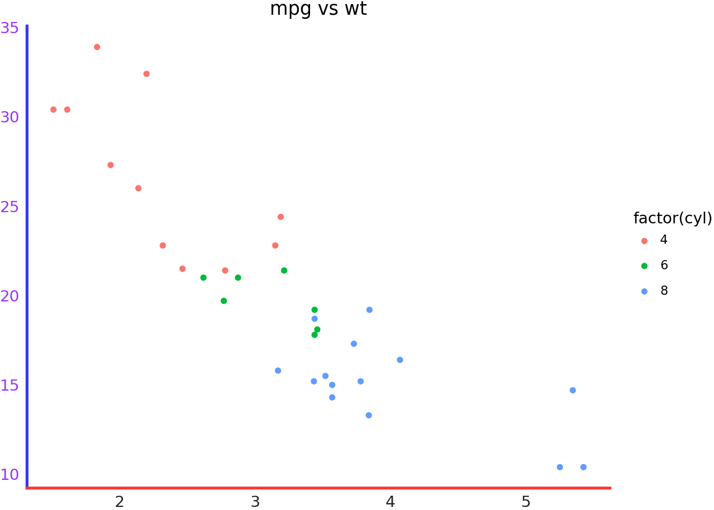
mtcars.head()| name | mpg | cyl | disp | hp | drat | wt | qsec | vs | am | gear | carb | |
|---|---|---|---|---|---|---|---|---|---|---|---|---|
| 0 | Mazda RX4 | 21.0 | 6 | 160.0 | 110 | 3.90 | 2.620 | 16.46 | 0 | 1 | 4 | 4 |
| 1 | Mazda RX4 Wag | 21.0 | 6 | 160.0 | 110 | 3.90 | 2.875 | 17.02 | 0 | 1 | 4 | 4 |
| 2 | Datsun 710 | 22.8 | 4 | 108.0 | 93 | 3.85 | 2.320 | 18.61 | 1 | 1 | 4 | 1 |
| 3 | Hornet 4 Drive | 21.4 | 6 | 258.0 | 110 | 3.08 | 3.215 | 19.44 | 1 | 0 | 3 | 1 |
| 4 | Hornet Sportabout | 18.7 | 8 | 360.0 | 175 | 3.15 | 3.440 | 17.02 | 0 | 0 | 3 | 2 |
The base plots we will use for the demonstation and some colors.
p1 = (
ggplot(mtcars, aes("wt", "mpg", color="factor(cyl)"))
+ geom_point()
+ labs(title="mpg vs wt")
)
p2 = p1 + facet_grid("gear", "am")
black = "#222222"
gray = "#666666"
red = "#FF3333"
green = "#66CC00"
blue = "#3333FF"
purple = "#9933FF"
orange = "#FF8000"
yellow = "#FFFF33"What the plots look like unmodified (unthemed).
p1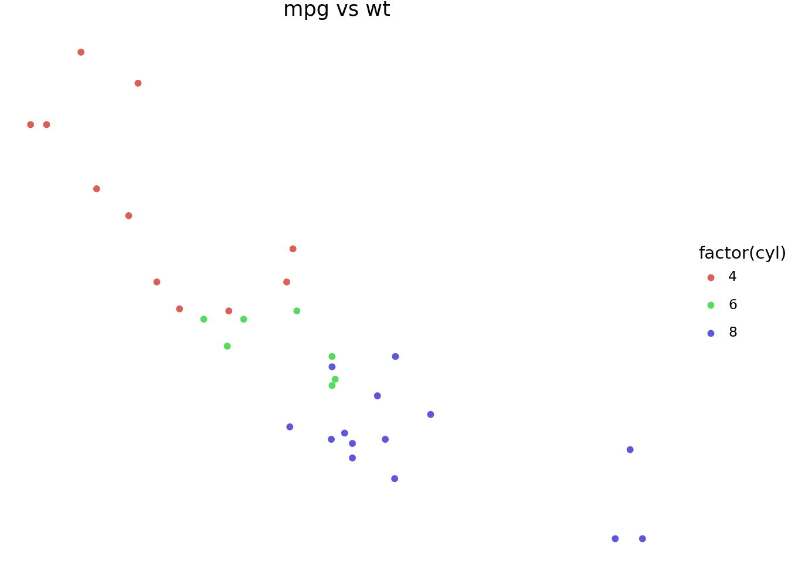
p2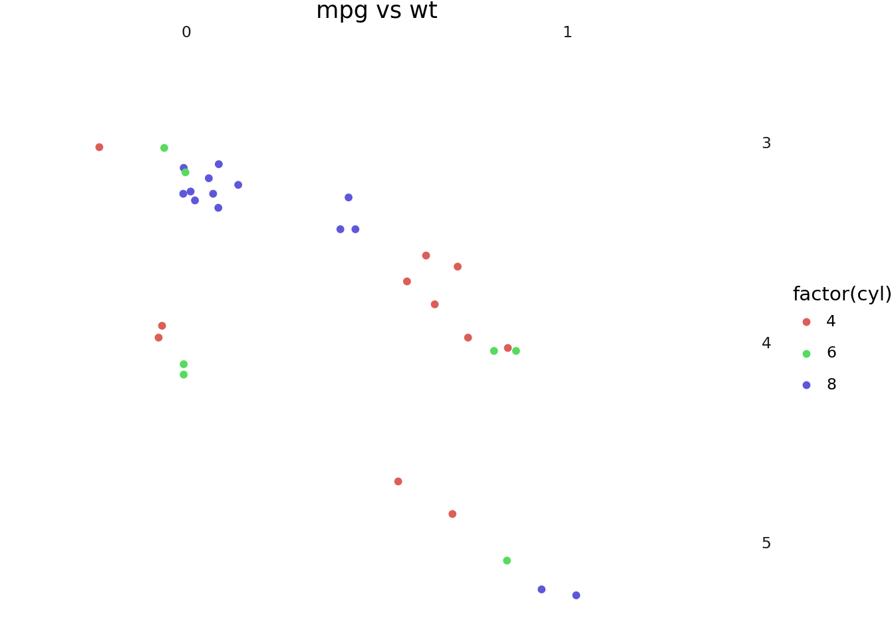
There are 3 main top level theming elements:
text- controls all the text elements in the figure.rect- controls all the rectangles in the figure.line- controls all the lines in the figure.
Note that none of the themeables control/modify the plotted data. e.g You cannot use text to change the appearance of objects plotted with geom_text.
text
p1 + theme(text=element_text(color=purple))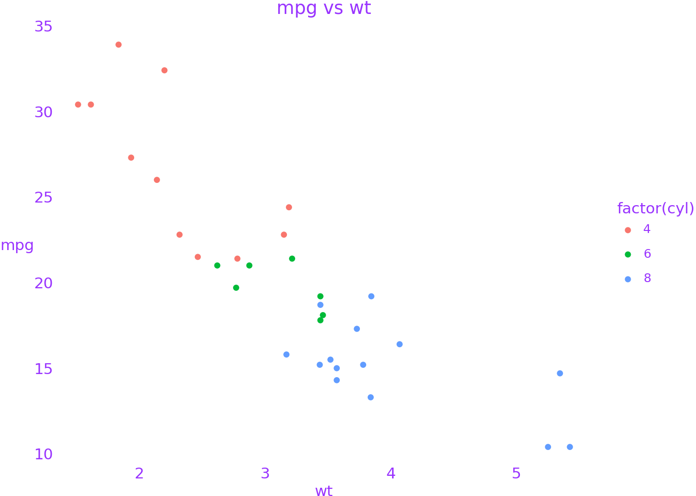
rect
p1 + theme(rect=element_rect(color=black, size=3, fill="#EEBB0050"))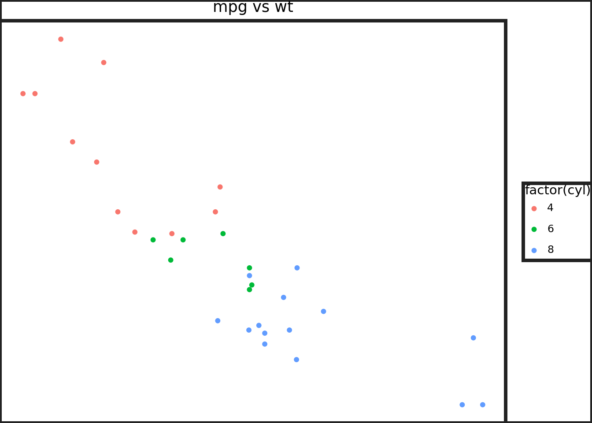
line
p1 + theme(line=element_line(color=black))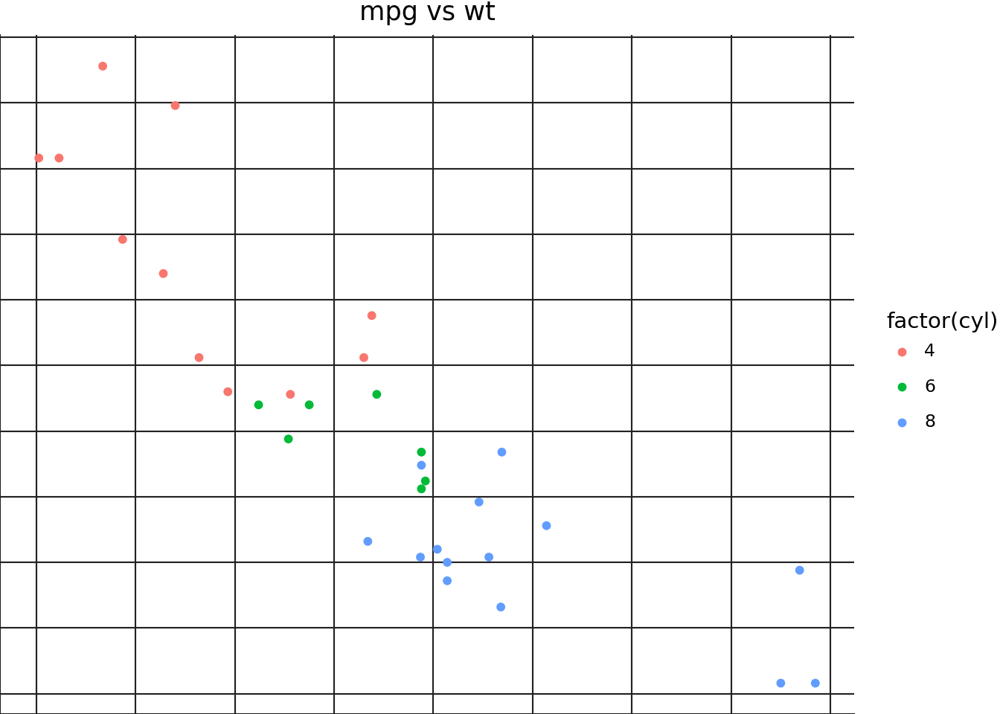
Theming specific items
axis_line and axis_text
p1 + theme(
axis_line=element_line(size=2),
axis_line_x=element_line(color=red),
axis_line_y=element_line(color=blue),
axis_text=element_text(margin={"t": 5, "r": 5}),
axis_text_x=element_text(color=black),
axis_text_y=element_text(color=purple),
)p1 + theme(
axis_line=element_line(size=0.7, color=gray),
# We are focusing on the ticks, make them long
axis_ticks_length=20,
axis_ticks_length_minor=10,
axis_ticks_length_major=20,
axis_ticks=element_line(size=2),
axis_ticks_major=element_line(color=purple),
axis_ticks_major_x=element_line(size=4), # override size=2
axis_ticks_major_y=element_line(color=yellow), # override color=purple
axis_ticks_minor=element_line(color=red),
axis_ticks_minor_x=element_line(), # do not override anything
axis_ticks_minor_y=element_line(color=gray), # override color=red
)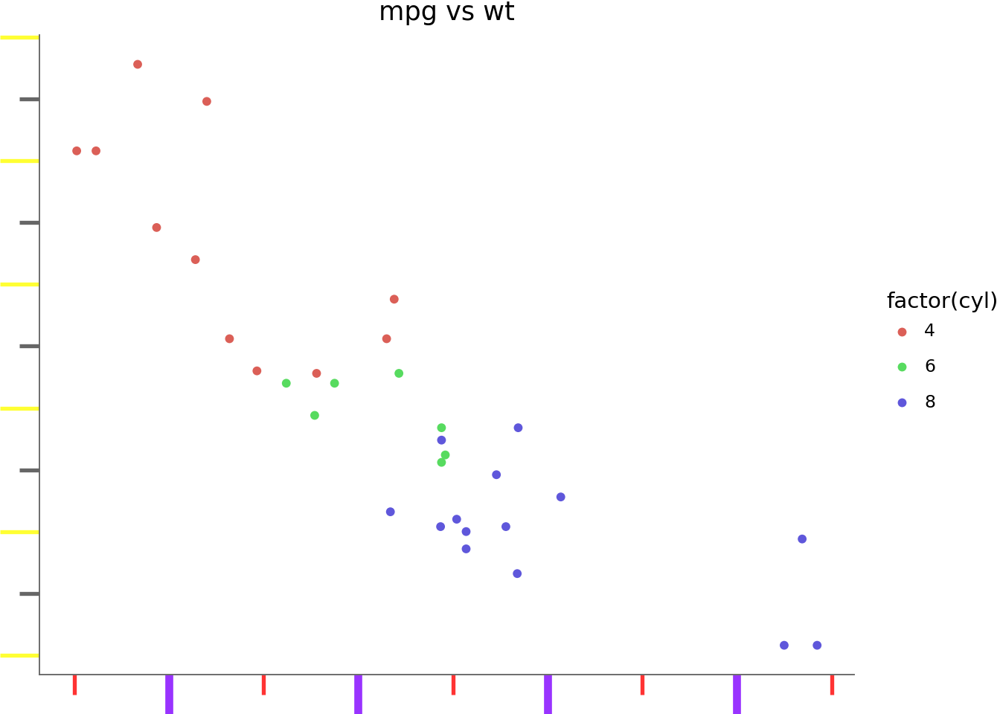
axis_title and axis_ticks_pad
p1 + theme(
axis_line=element_line(size=0.7, color=gray),
axis_ticks=element_line(),
axis_title=element_text(),
axis_title_x=element_text(color=blue),
axis_title_y=element_text(color=red),
# The gap between the title and the ticks
axis_ticks_pad=20,
axis_ticks_pad_major=20,
axis_ticks_pad_minor=20,
)/home/runner/work/plotnine.org/plotnine.org/.venv/lib/python3.12/site-packages/plotnine/themes/themeable.py:2747: FutureWarning: Themeable 'axis_ticks_pad' is deprecated andwill be removed in a future version. Use the margin parameter of axis_text. e.g.
axis_text_x(margin={'t': 20})
axis_text_y(margin={'r': 20})
axis_text(margin={'t': 20, 'r': 20})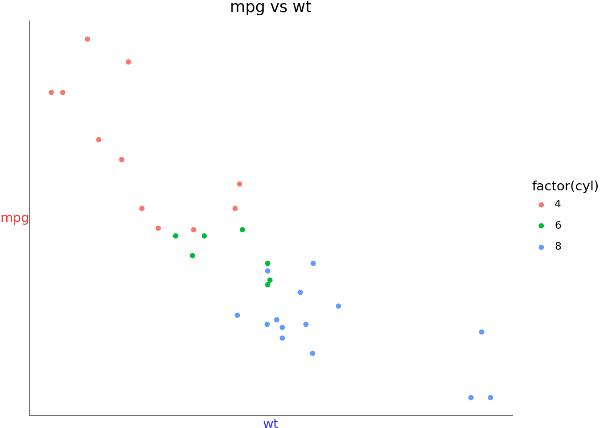
axis_ticks_direction
p1 + theme(
axis_line=element_line(size=0.7, color=gray),
axis_ticks=element_line(),
axis_ticks_direction="in",
axis_ticks_direction_x="in",
axis_ticks_direction_y="out",
)/home/runner/work/plotnine.org/plotnine.org/.venv/lib/python3.12/site-packages/plotnine/themes/themeable.py:2538: FutureWarning: Themeable 'axis_ticks_direction' is deprecated andwill be removed in a future version. Use +ve or -ve values of the axis_ticks_lengthto affect the direction of the ticks.
/home/runner/work/plotnine.org/plotnine.org/.venv/lib/python3.12/site-packages/plotnine/themes/themeable.py:2566: FutureWarning: Themeable 'axis_ticks_direction' is deprecated andwill be removed in a future version. Use +ve/-ve/complex values of the axis_ticks_lengthto affect the direction of the ticks.
/home/runner/work/plotnine.org/plotnine.org/.venv/lib/python3.12/site-packages/plotnine/themes/themeable.py:2538: FutureWarning: Themeable 'axis_ticks_direction_x' is deprecated andwill be removed in a future version. Use +ve or -ve values of the axis_ticks_lengthto affect the direction of the ticks.
/home/runner/work/plotnine.org/plotnine.org/.venv/lib/python3.12/site-packages/plotnine/themes/themeable.py:2566: FutureWarning: Themeable 'axis_ticks_direction_y' is deprecated andwill be removed in a future version. Use +ve/-ve/complex values of the axis_ticks_lengthto affect the direction of the ticks.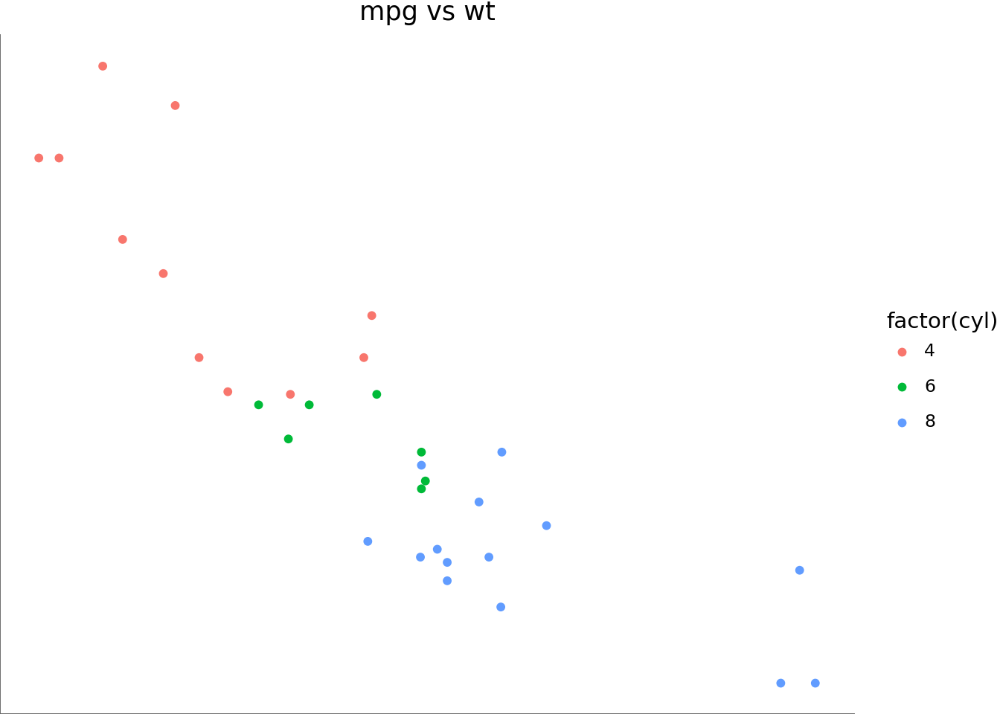
Legend_box
Not all themeables that affect the legend box are demonstrated
(
p1
+ aes(fill="drat")
+ theme(
legend_position="left",
legend_direction="horizontal", # affected by the ncol=2
legend_box_margin=5,
legend_background=element_rect(color=purple, size=2, fill="white"),
legend_box="vertical",
legend_key=element_rect(fill=gray, alpha=0.3),
legend_title=element_text(color=orange, va="top"),
legend_text=element_text(weight="bold"),
legend_key_spacing=10, # overridden
legend_key_spacing_x=15,
legend_key_spacing_y=5,
)
# so we can see legend_entry_spacing in action
+ guides(color=guide_legend(ncol=2))
)
plot_background, panel_background and panel_border
p2 + theme(
plot_background=element_rect(fill="gray", alpha=0.3),
panel_background=element_rect(fill=purple, alpha=0.2),
panel_border=element_rect(color=red, size=1),
panel_spacing=0.025,
)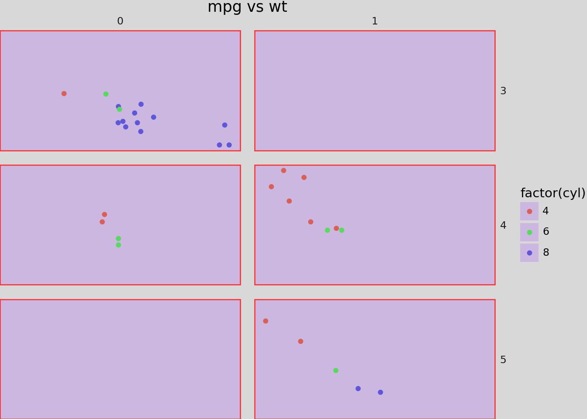
panel_grid
p1 + theme(
panel_grid=element_line(color=purple),
panel_grid_major=element_line(size=1.4, alpha=1),
panel_grid_major_x=element_line(linetype="dashed"),
panel_grid_major_y=element_line(linetype="dashdot"),
panel_grid_minor=element_line(alpha=0.25),
panel_grid_minor_x=element_line(color=red),
panel_grid_minor_y=element_line(color=green),
panel_ontop=False, # puts the points behind the grid
)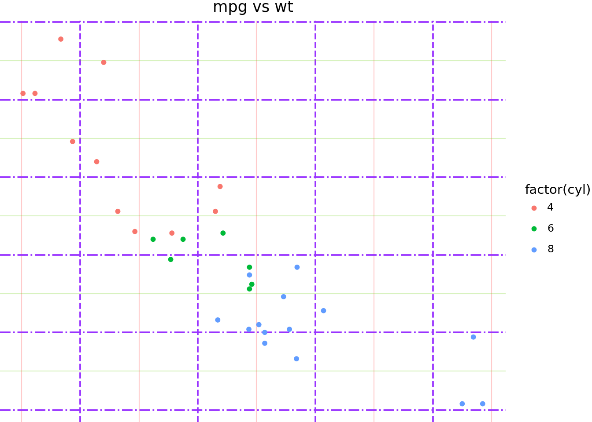
strip_background, strip_align and strip_text
p2 + theme(
panel_spacing=0.025,
panel_background=element_rect(fill=gray, alpha=0.2),
strip_background=element_rect(color=purple, fill=orange, size=1.4, alpha=0.95),
strip_background_x=element_rect(x=1 / 6, width=2 / 3), # you can get really crazy
strip_background_y=element_rect(),
strip_align=0,
strip_align_x=0.2,
strip_align_y=0.2,
strip_text=element_text(weight="bold"),
strip_text_x=element_text(color=red),
strip_text_y=element_text(color=blue),
)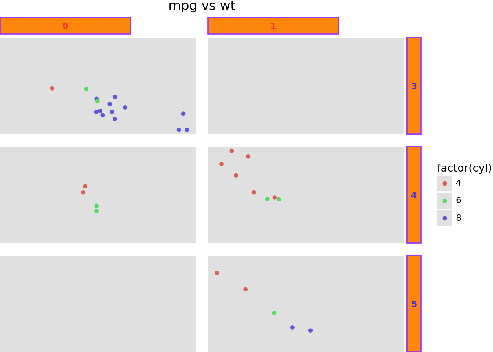
aspect_ratio and figure_size
The aspect_ratio takes precedence over the figure_size, and it modifies the height. The effective width and height are:
width = figure_size[0]
height = figure_size[0] * aspect_ratiop1 + theme(
panel_background=element_rect(fill=gray, alpha=0.2),
figure_size=(8, 6), # inches
aspect_ratio=1 / 3, # height:width
)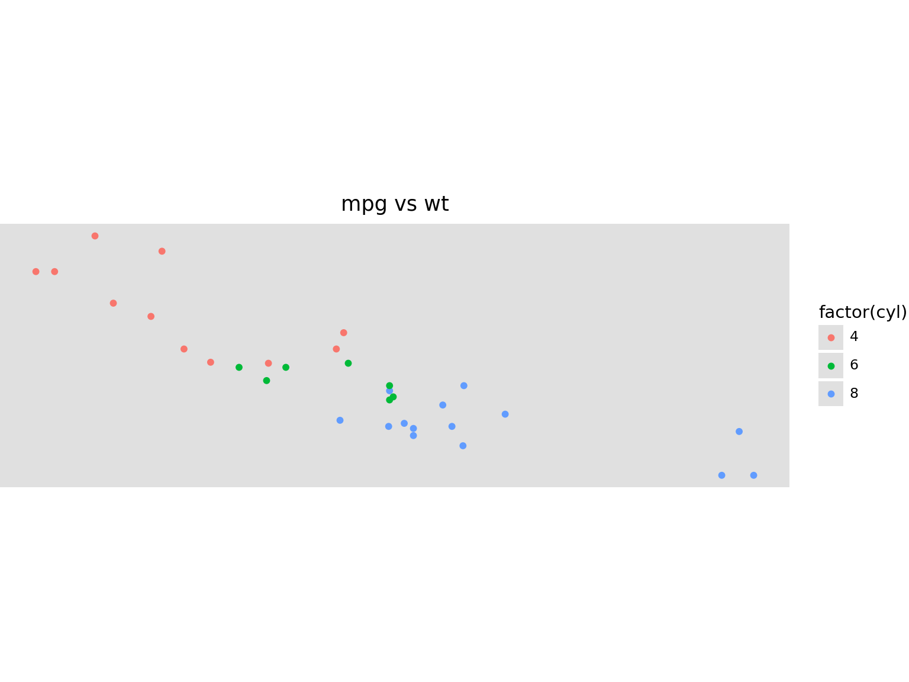